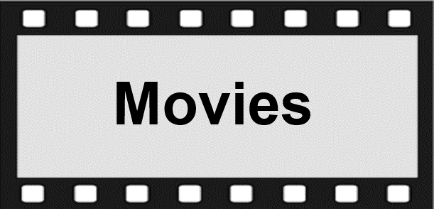
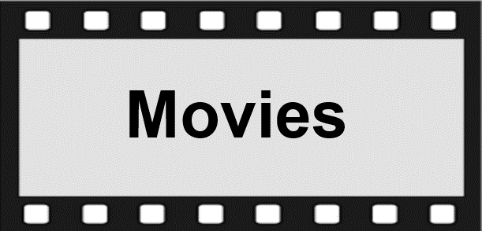

The 1960s
In 1959, François Truffaut proved the veracity of his argument when he presented his first film, Les 400 coups, at the Cannes Film Festival. The film not only impressed the critics, it was also a hit with the public, and ushered in the era of the French New Wave (la Nouvelle Vaque). Truffaut's collaborators on the editorial staff of the film review journal Les Cahiers du cinéma -Jean-Luc Godard, Jacques Rivette, Claude Chabrol and Eric Rohmer-also made an immediate impact with their debut features, which radically transformed the face of French cinema in the 1960s. Godard was the most intellectual and politically minded of the group, and the most radical but whilst his early films - À bout de souffle (1960), Le Mépris (1963) and Pierrot le fou (1965) - found favour among critics and audiences, his subsequent work became increasingly abstruse and hard to engage with. Meanwhile, Truffaut flirted shamelessly with the mainstream and enjoyed considerable success with stylish crowd-pleasers such as Jules et Jim (1962) and Baisers volés (1968). After some notable early misfires, Chabrol finally found his feet with the genre for which he is best suited, the psychological thriller, represented by Que la bête meure (1969) and Le Boucher (1970). Rivette earned acclaim for his mind bending surreal oddity Céline et Julie vont er bateau (1974) whilst Rohmer's success was assured with Ma nuit chez Maud (1969), the first of his low-key dramas about young people struggling with the complexities of love and relationships. Riding on the crest of this New Wave revolution was a new batch of charismatic young actors which included Jeanne Moreau, Jean-Paul Belmondo, Jean Claude Brialy, Jean-Pierre Léaud, Bernadette Lafont, Jean-Louis Trintignant and Catherine Deneuve.
Whilst the term 'Nouvelle Vague' is now often restricted to Truffaut and his buddies on the Cahiers du cinéma, it was originally coined to describe the huge influx of French filmmakers (around 200) that came onto the scene in the late 1950s early 1960s. To the above mentioned five, we can also add: Louis Malle, Alain Resnais, Aqnès Varda, Chris Marker, Jacques Demy, Jean Eustache, Alain Cavalier, Claude Sautet, Costa-Gavras, Claude Lelouch and Maurice Pialat - all of whom would have a significant impact and help to establish the film d'auteur as a main strand of French cinema. Malle gave us three of France's most insightful film portraits of childhood and adolescence with Souffle au coeur (1971), Lacombe Lucien (1974) and Au revoir, les enfants (1987); Resnais explored the relationship between time and memory more fully and
imaginatively than any other filmmaker, with such films as Hiroshima mon amour (1959), L'Année dernière à Marienbad (1961) and Muriel (1963); and Demy crafted two of the greatest film musicals ever: Les Parapluies de Cherbourg (1964) and Les Demoiselles de Rochefort (1967). Lelouch's vibrant and self consciously arty Un homme et une femme (1966) evokes the spirit of the mid-1960s better than any other film and is probably the most famous French film of them all better known under the title A Man and a Woman.
In parallel with this burgeoning auteur component to French cinema, Frances mainstream cinema also underwent something of a revitalisation in the 1960s partly through the need to compete with television, partly through the influence of its bigger American cousin. The two genres that became particularly important in this decade (and the next) were comedies and thrillers. Director Gérard Oury notched up a series of massive box office hits in the '60s and '70s with his blockbuster comedies starring the comic geniuses Louis de Funès and Bourvil. La Grande vadrouille, Oury's biggest success, drew an audience of 17.3 million, making it the most popular French film ever, until it was overtaken by Dany Boon's Bienvenue chez les Ch'tis, 42 years later. The comedy-thriller enjoyed considerable success in the 1960s, particularly the collaborations of director Georges Lautner and Michel Audiard, best represented by Les Tontons flingueurs (1963) and Ne nous fachons (1966). The crime-thriller (film policier) became ever more popular under the stewardship of such directors as Jacques Deray, Jean-Pierre Melville, Henri Verneuil and José Giovanni, highlights being Le Pacha (1968), Le Samourai (1968) and Le Clan des Siciliens (1969).
Content designed and maintained by French Films. Org


 
